Business Context
MPHA turns healthcare operating pressure into trusted insights and guided action
Metro Public Health Authority needs to improve claims transparency, reduce denial leakage, monitor disbursements, track membership and provider accreditation, and turn policy guidance into faster operational decisions. This execution flow shows how Oracle AI Data Platform, Autonomous AI Lakehouse, Oracle Analytics Cloud, machine learning, and AI agents work together to deliver that operating model.
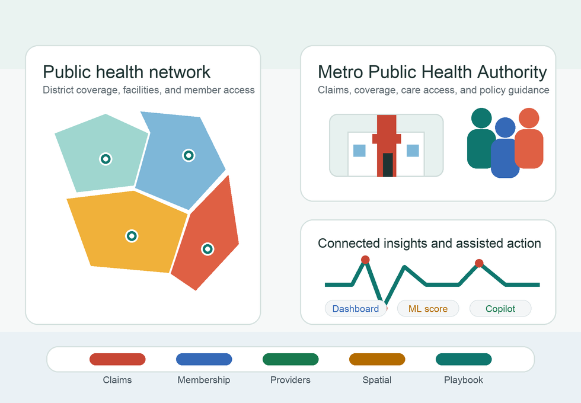
MPHA business problems
- Claims transparency and denial leakage across districts, programs, and claim types.
- Disbursement visibility where submitted amounts do not convert into paid amounts.
- Membership, provider accreditation, service-area, and facility-pressure accountability.
- Policy guidance that is difficult to operationalize from long playbook documents.
Workshop capabilities
- OAC Claims Executive Overview with KPIs, trends, hotspots, maps, and Assistant responses.
- Claims star schema in Autonomous AI Lakehouse as the trusted Gold serving layer.
- Round 2 JSON and spatial context extension for richer district-level Claims insights.
- Denial risk scoring to prioritize claims that need review or intervention.
- Claims and Policy Copilot that combines SQL analytics with RAG over the MPHA playbook.
Workshop build path
Lab 0
Set up the shared OCI, AIDP, AI Lakehouse, and OAC environment
The facilitator prepares the environment once so first-time participants are not distracted by tenancy, policy, user, bucket, catalog, and service provisioning details. Do not move to Lab 1 until these setup steps are complete and visible to the participants.
Lab 0 admin setup sequence
Complete these steps in order. Each step includes the checkpoint screenshot that confirms the expected screen or result before moving forward.
Step 1: Create or select the OCI compartment
Admin step
In the OCI Console, open Identity & Security - Compartments. Create a compartment such as MPHA_AIDP_WORKSHOP or select the compartment assigned by the tenancy admin. Use this same compartment for Object Storage, AIDP, Autonomous AI Lakehouse, OAC, Generative AI Agents, and policies.
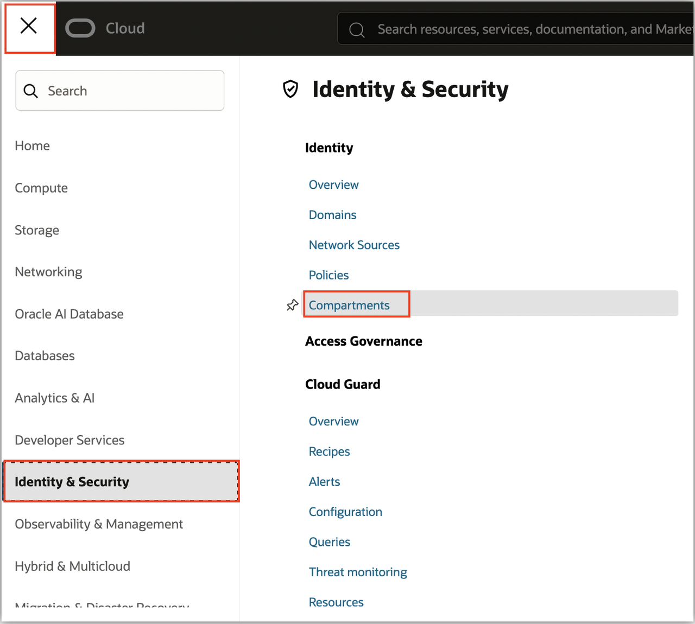
On the compartment create form, enter the workshop compartment name and confirm it will be reused for every OCI service.
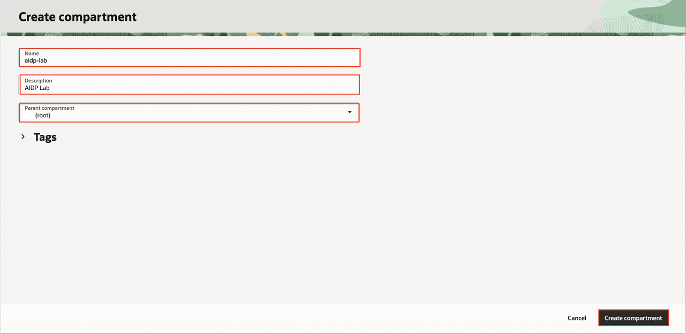
MPHA_AIDP_WORKSHOP, and reuse it for all workshop services.Step 2: Create or confirm the AIDP instance and standard policies
Admin step
Open Analytics & AI - AI Data Platform, create or reuse the workshop AIDP instance, and apply the generated standard policies. Confirm the facilitator group can manage AIDP workspaces, clusters, catalogs, volumes, Object Storage buckets, AI Lakehouse resources, OAC connections, and Generative AI Agent resources where optional labs are included.
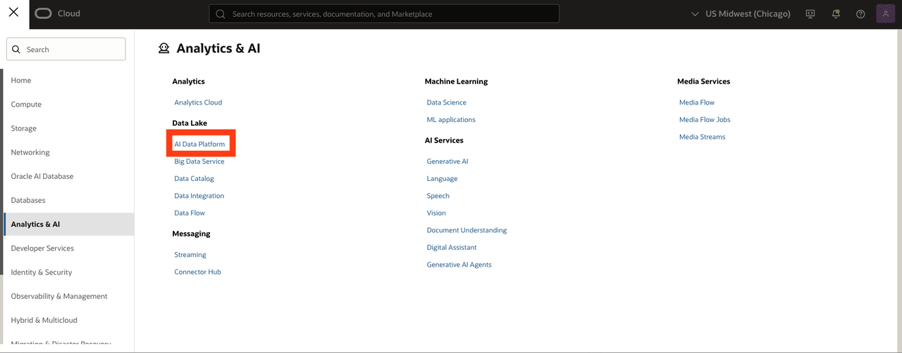
On the Create AI Data Platform form, select the workshop compartment and provide the AIDP instance details.
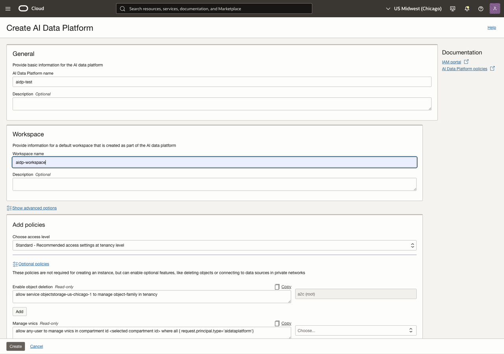
After the AIDP instance is created, open the standard policies page and apply the generated policy statements.
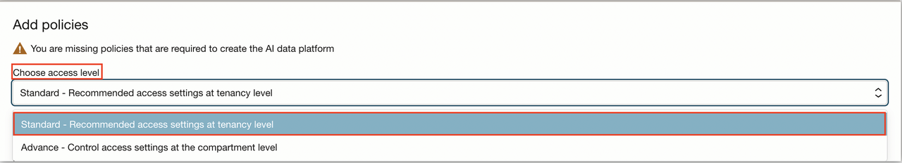
Step 3: Create the Object Storage bucket, folders, and raw landing area
Admin step
Open Storage - Buckets, select the workshop compartment, and create a bucket such as mpha-workshop-bucket. Then create the prefixes listed in the folder contract below. Upload the five CSV files under mpha/raw/, the JSONL file under mpha/raw_json/, the GeoJSON file under mpha/raw_spatial/, and the MPHA playbook document under mpha/documents/.
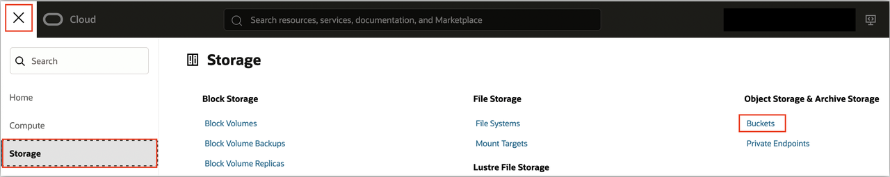
On the bucket creation form, create the shared Object Storage bucket for the workshop data and medallion folders.
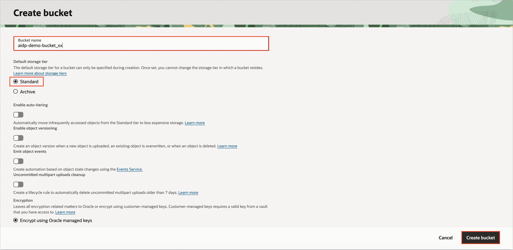
Inside the bucket, create the required folder prefixes for raw, bronze, silver, gold, document, and vector content.
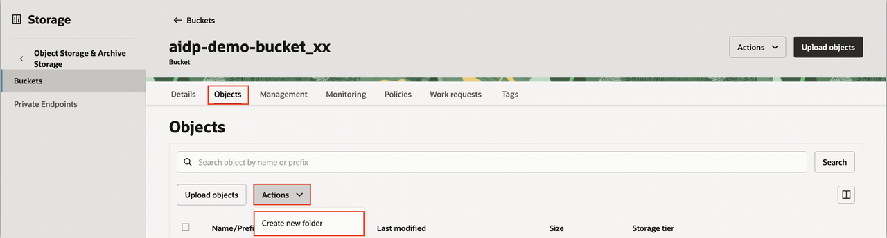
After creating the prefixes, return to the bucket view and confirm the folders are visible before moving to AIDP volumes.
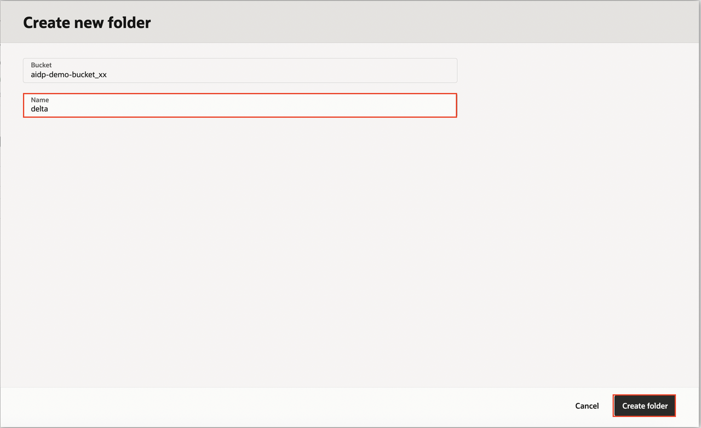
Object Storage folder contract
| Folder prefix | Used for | Lab dependency |
|---|---|---|
mpha/raw/ | Five CSV files for claims, membership, disbursement, provider, facility, district, and population-health context. | Lab 1 Bronze |
mpha/raw_json/ | Facility capacity event JSONL input. | Lab 1 Bronze |
mpha/raw_spatial/ | Healthcare service area GeoJSON input. | Lab 1 Bronze and spatial insight |
mpha/documents/ | MPHA playbook document for document chunking and Claims Policy Copilot grounding. | Lab 1 and Optional Lab 6A |
mpha/bronze/ | Bronze Delta outputs preserving raw structure plus ingestion metadata. | Lab 1 Bronze |
mpha/silver/ | Conformed and typed Silver outputs used by Gold and ML flows. | Lab 1 Silver |
mpha/gold_stage/ | Intermediate Gold-stage files and optional staged-file path. | Lab 2 and Optional Lab 5 |
mpha/gold_dimensional/ | Dimensional outputs and validation extracts when the team wants file-based inspection. | Lab 2 validation |
mpha/vector/ | Document chunk and embedding-ready outputs for policy retrieval patterns. | Optional Lab 6A |
Step 4: Open AIDP Workbench and confirm the workspace
Admin step
After the AIDP instance becomes available, open AIDP Workbench. Create or confirm the workspace such as mpha-core-workshop, create or confirm a Spark cluster such as mpha-spark-cluster, and verify participants can attach that cluster to notebooks.
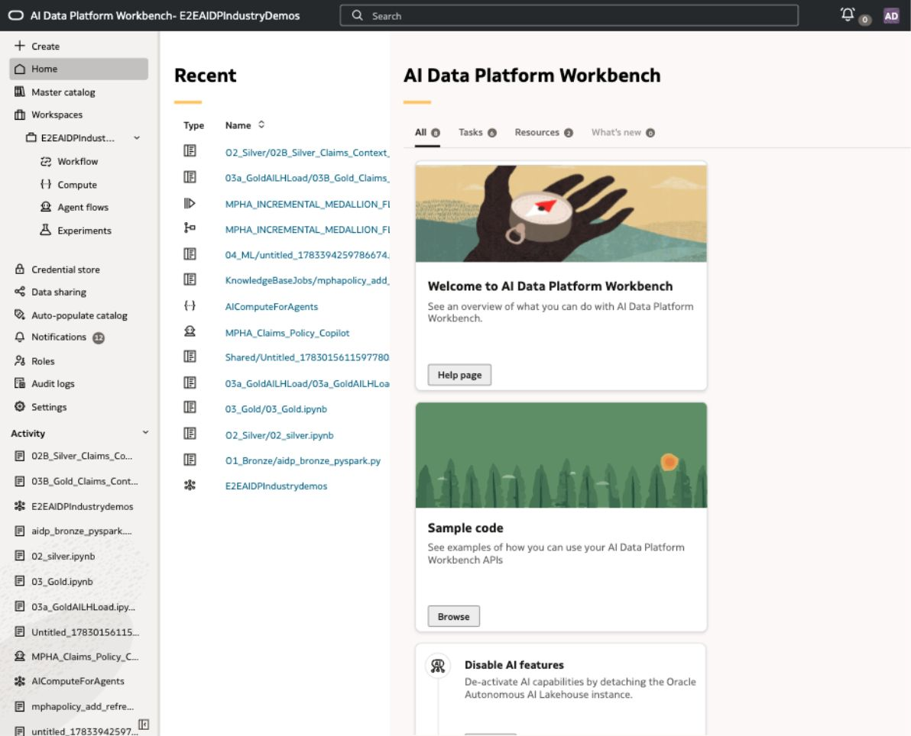
Open the participant workspace and confirm the shared folder structure that participants will use for notebook uploads.
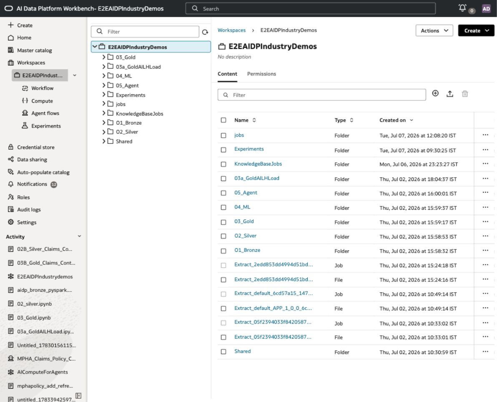
Step 5: Create the standard catalog, schema, and external volume
Admin step
In AIDP Master Catalog, create or confirm the standard catalog and schema used for the workshop landing area. Create external volumes that point to the Object Storage bucket and folder prefixes.
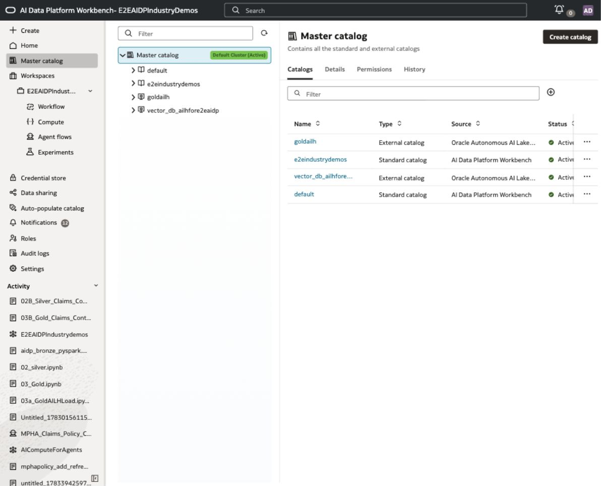
In Master Catalog, open the standard catalog created for the workshop landing zone.
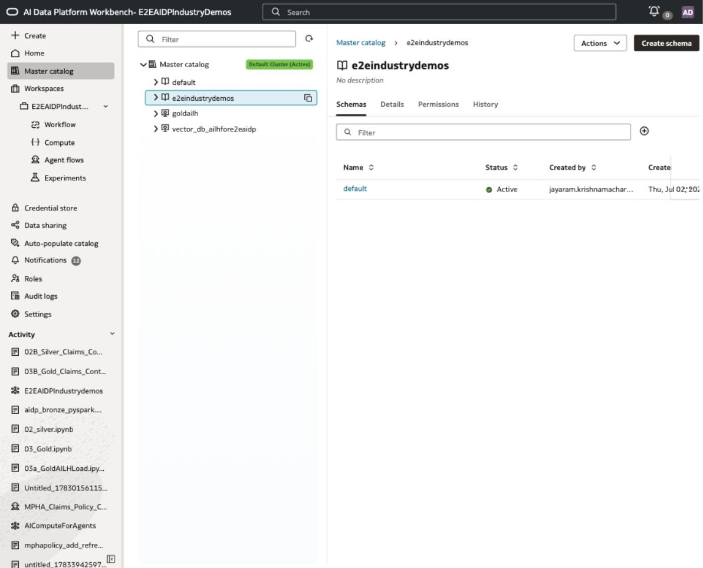
Open the schema Volumes tab and confirm the external volume is mapped to the Object Storage bucket.
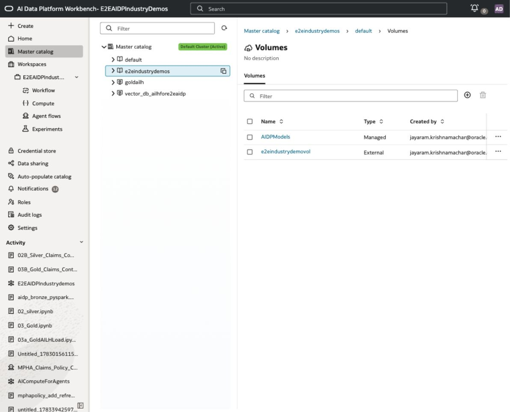
Open the external volume and verify the medallion folder structure is available from AIDP.
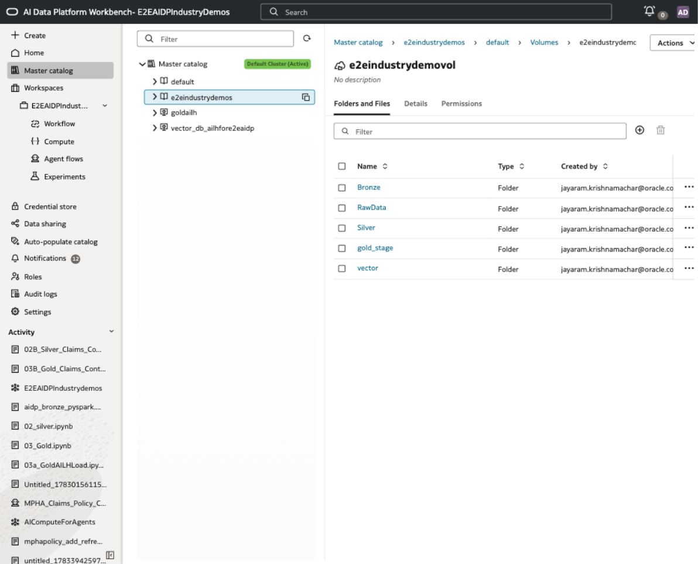
Step 6: Create the AI Lakehouse catalog, user, and Claims target schema
Admin stepCreate the AIDP external catalog connection to Autonomous AI Lakehouse, test connectivity, and confirm the participant schema is visible. In Autonomous AI Lakehouse Database Actions, create the workshop user or schema, set quota high enough for loading, REST-enable the user if needed, and run the Claims star schema table creation SQL.
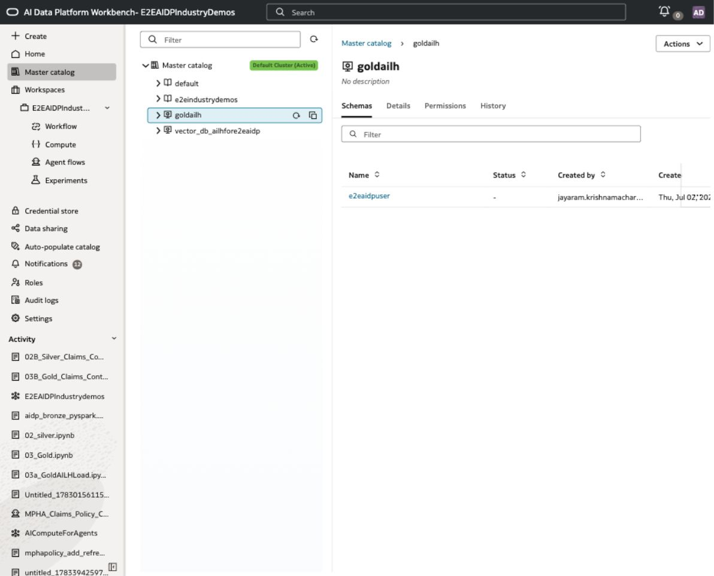
Open the AI Lakehouse external catalog schema and confirm the Claims fact and dimension tables are visible.
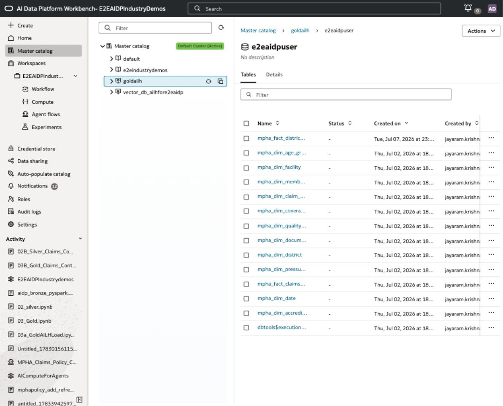
Step 7: Create the workspace notebook folders
Admin step
In AIDP, create folders such as O1_Bronze, O2_Silver, 03_Gold, 03a_GoldAILHLoad, 04_ML, 05_Agent, and Shared. Participants will upload the downloaded notebooks into these folders during the labs.
Step 8: Create the blank copilot shell and prepare AI compute
Admin stepCreate only an empty agent flow shell in Lab 0 so the facilitator can start the AI compute ahead of the optional copilot lab. Do not add the supervisor, SQL executor, RAG executor, or tools in Lab 0. Participants build that logic later in Optional Lab 6B.
- Open Agent flows in the AIDP workspace.
- Click Create and create a visual-builder shell named
MPHA_Claims_Policy_Copilot. - Leave AI Compute unselected in the shell creation dialog unless the compute already exists.
- After the blank shell opens, click Compute on the agent flow page.
- Select Create a new AI Compute, provide the compute details, and click Create in the real admin setup.
- Use a clearly named compute such as
AIComputeForAgents. The validated configuration uses1OCPU and16GB memory. - Wait until the AI compute status is active before participants start Optional Lab 6B.
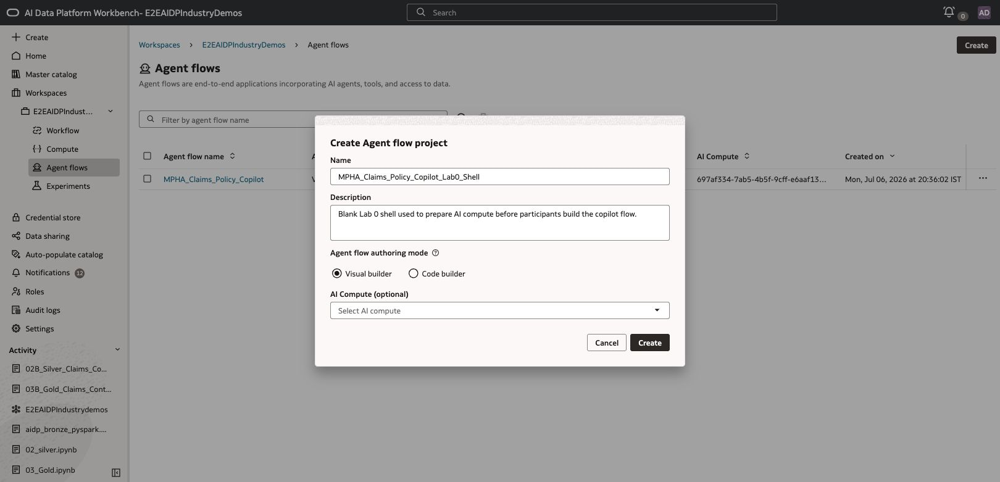
MPHA_Claims_Policy_Copilot; the captured validation environment uses a Lab 0 shell suffix because the finished copilot already existed.After submitting the blank shell form, verify the shell opens with no compute or agent nodes attached.
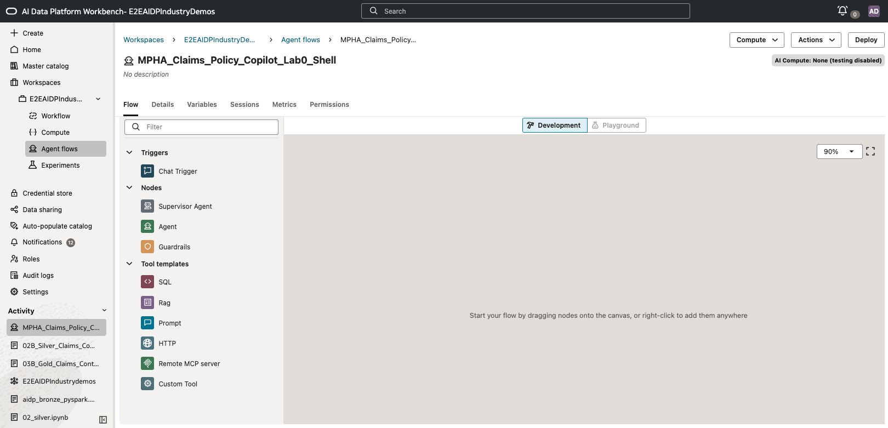
AI Compute: None and no supervisor, agent, SQL, or RAG nodes configured yet.Use the blank shell Compute menu to choose whether to attach existing compute or create the workshop AI compute.
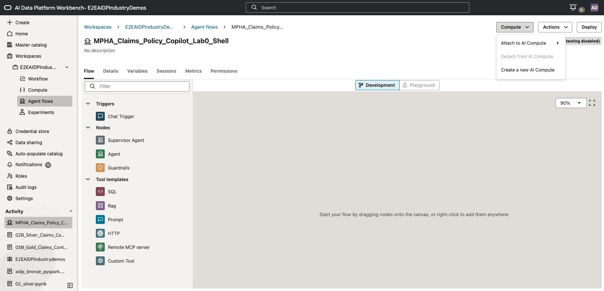
In the Create AI compute dialog, enter the facilitator-provided compute name, OCPU, and memory values before creating it.
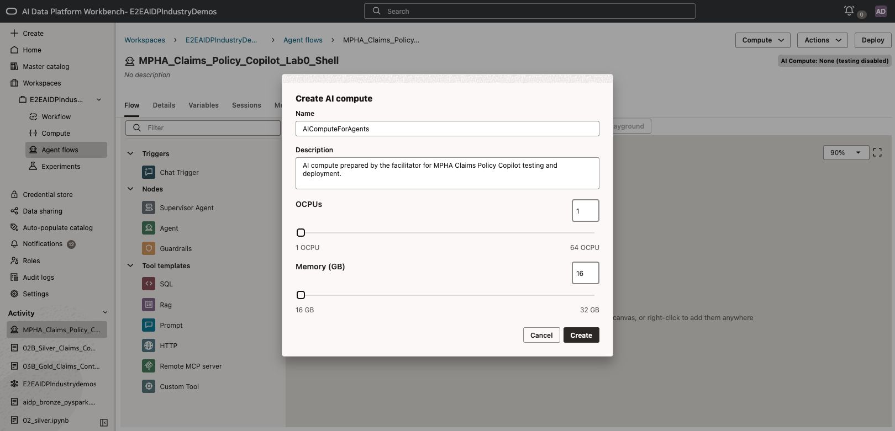
Step 9: Create or confirm Oracle Analytics Cloud
Admin stepProvision Oracle Analytics Cloud or confirm the shared OAC instance is ready. Do not build the OAC dataset until after the Claims star schema has been loaded and validated in Lab 2.
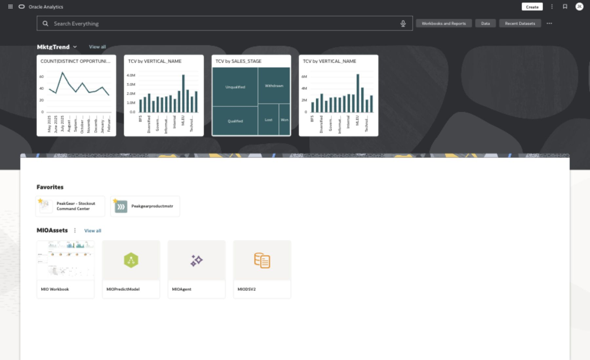
Admin-to-participant handoff
| Admin confirms | Participant should see |
|---|---|
| Compartment and standard policies are applied. | No permission errors when opening AIDP workspace, catalog, volume, and notebook folders. |
| Object Storage bucket and prefixes exist. | Raw files and medallion folders are visible through the AIDP volume. |
| AIDP workspace, Spark cluster, catalogs, and volumes are ready. | Participants can upload notebooks and attach the shared compute. |
| AI Lakehouse schema and Claims star schema tables exist. | The direct-load notebook can insert into mpha_dim_* and mpha_fact_claims_monthly. |
| Blank Claims Policy Copilot shell and Agent AI compute are prepared. | Optional Lab 6B starts from the empty shell; participants build the supervisor, SQL, and RAG logic after compute is already available. |
| OAC instance is provisioned. | OAC connection and dataset creation can begin after Lab 2 validation. |
Lab 0 readiness gate
- AIDP instance, workspace, Spark compute, catalogs, and volume are available.
- Raw data bundle has been uploaded or made available to participants.
- AI Lakehouse target user and Claims star schema tables are created.
- Blank copilot shell exists and
AIComputeForAgentsis active or being started before Optional Lab 6B. - OAC instance is available but the dashboard dataset is created after the Claims load.
Lab 1
Build Bronze and Silver layers in AIDP
Participants download the workshop notebooks, upload them into the matching AIDP workspace folders, attach compute, and run the notebooks in sequence.
Step 1: Download and upload the Bronze and Silver notebooks
Participant stepDownload the notebook assets from the Workshop Assets section and upload them into the matching AIDP workspace folders. Use the existing workspace folders prepared in Lab 0.
| Notebook | Folder | Outcome |
|---|---|---|
01_Bronze_Public_Healthcare.ipynb | O1_Bronze | Loads CSV, JSON, spatial, and document inputs into Bronze Delta tables. |
02_Silver_Public_Healthcare.ipynb | O2_Silver | Cleanses, standardizes, derives, and conforms payer, provider, claims, events, spatial, and document context. |
03_Gold_Public_Healthcare.ipynb | 03_Gold | Reviews broader Gold business outputs; the direct Claims star schema load is the guided serving path. |
Step 2: Run the Bronze notebook
Participant step- Open the Bronze notebook from
O1_Bronze. - Attach the shared Spark compute.
- Confirm the raw CSV, JSONL, GeoJSON, and document paths.
- Run all cells and confirm Bronze outputs are written to the shared volume.
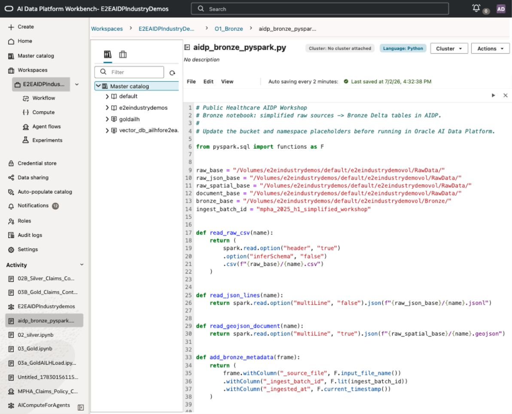
Step 3: Run the Silver notebook
Participant step- Open the Silver notebook from
O2_Silver. - Attach the same Spark compute used for Bronze.
- Run all cells to standardize, type, derive, and conform the healthcare data.
- Confirm Silver outputs are written and ready for the Claims star schema load in Lab 2.
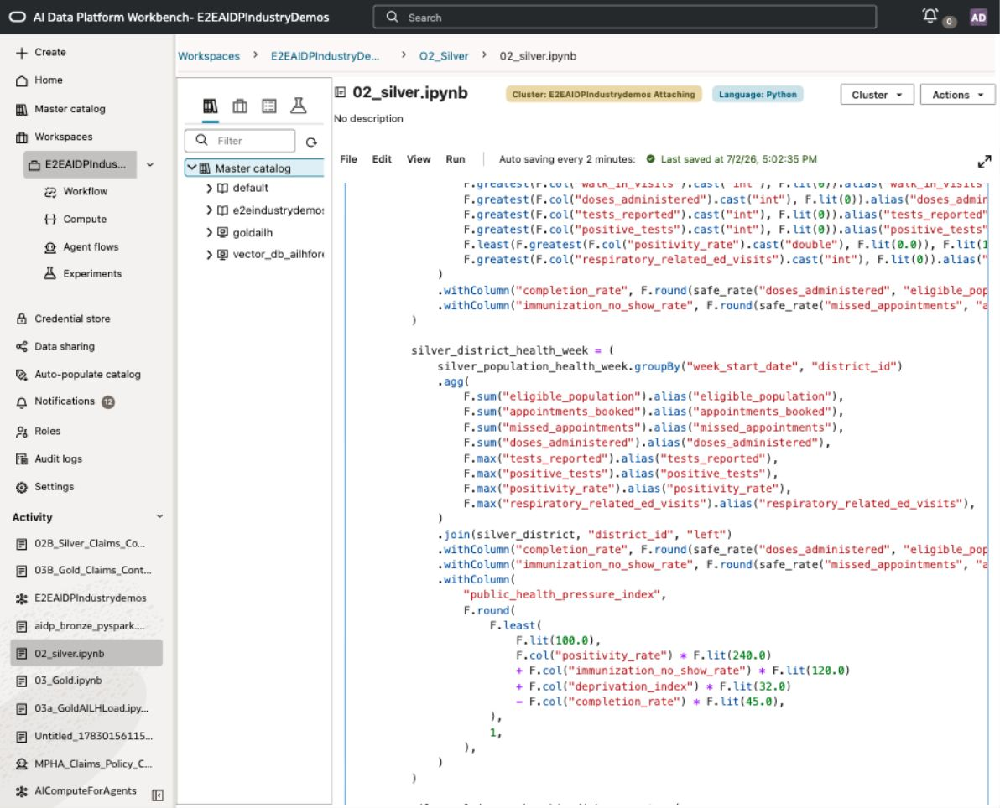
Operational checkpoint - create the AIDP Workflow for incremental medallion runs
After the notebook sequence is clear, review the validated AIDP Workflow version of the same flow. This is the operational view of the workshop pipeline: every task has a file, compute target, timeout, dependency, and a successful run trail.
Open Workflow and create the job
In AIDP Workbench, open the shared workshop workspace, click Workflow, and create a workflow named MPHA_INCREMENTAL_MEDALLION_FLOW.
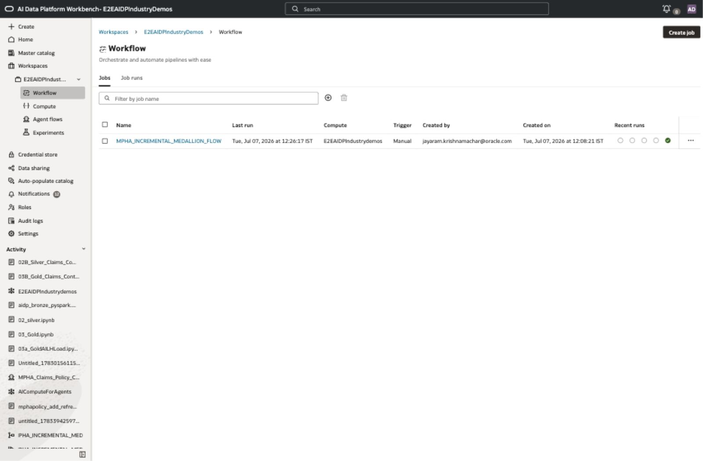
Create the workflow job shell and give it the workshop workflow name before adding notebook tasks.
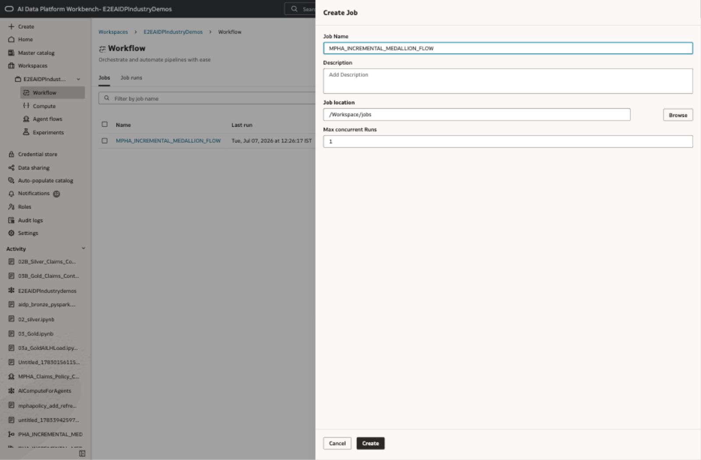
Configure the Bronze ingest task
Rename the first task to bronzeingest. Select the task type that matches the uploaded asset. In the validated run, Bronze used a Python task pointing to /Workspace/O1_Bronze/aidp_bronze_pyspark.py.
- Select the Bronze file from the
O1_Bronzefolder. - Select compute
E2EAIDPIndustrydemos. - Set an execution timeout before adding the next task. The validated workflow uses
30minutes.
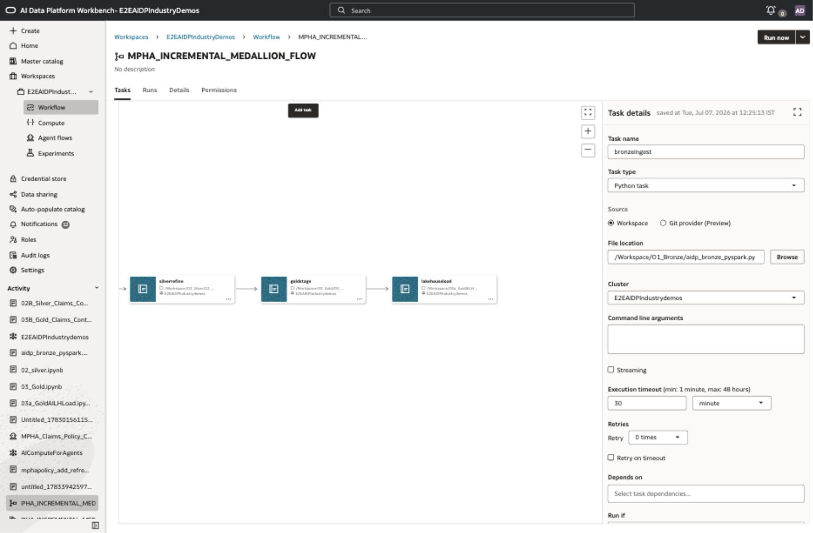
Add Silver after Bronze
Add silverrefine after the Bronze task has a timeout value. Set the dependency to bronzeingest, choose the Silver notebook or Python file, select the same compute, and set a timeout.
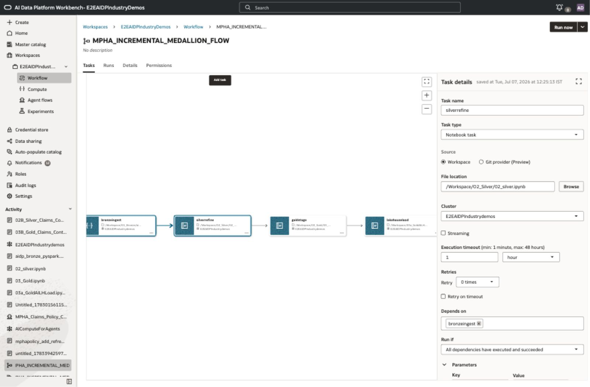
Add Gold staging and AI Lakehouse load tasks
Add goldstage after silverrefine. Then add lakehouseload after goldstage. For both tasks, choose the file from the correct workspace folder, select compute, and set a timeout.
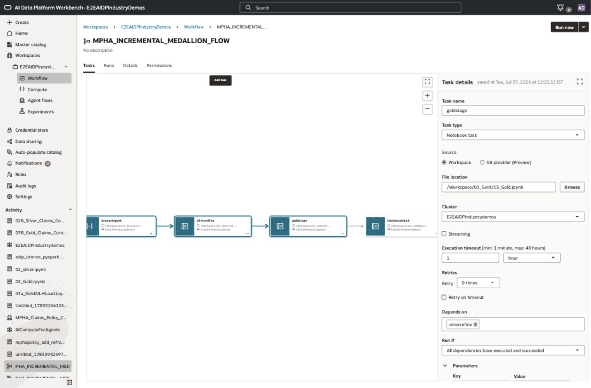
Open the Lakehouse load task configuration and confirm it points to the Claims star schema load notebook.
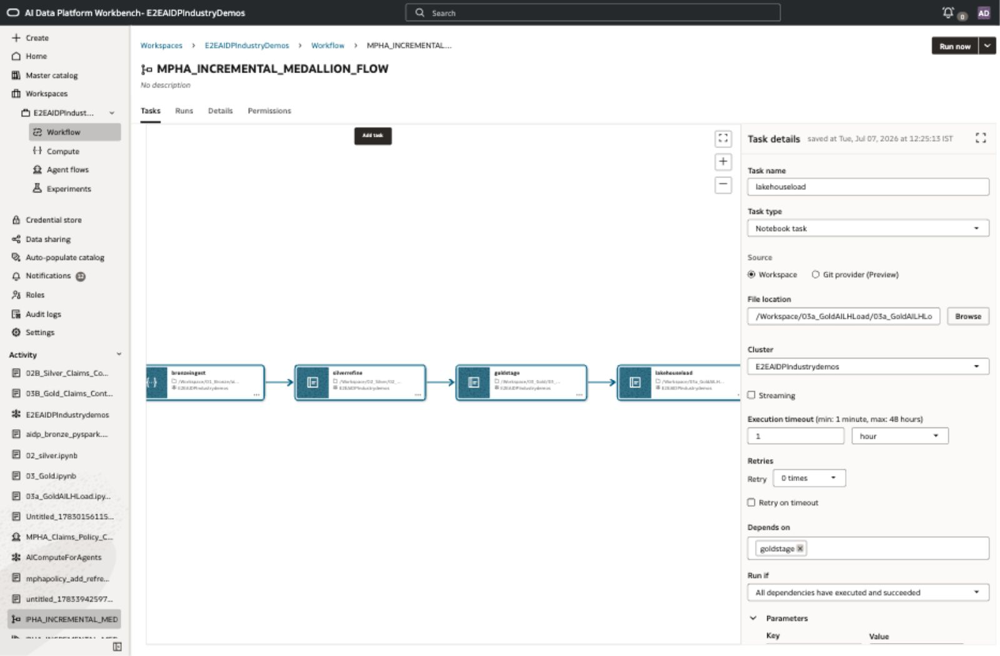
Review and run the workflow
Before running, confirm the chain is bronzeingest to silverrefine to goldstage to lakehouseload. Run the workflow and watch the graph view.
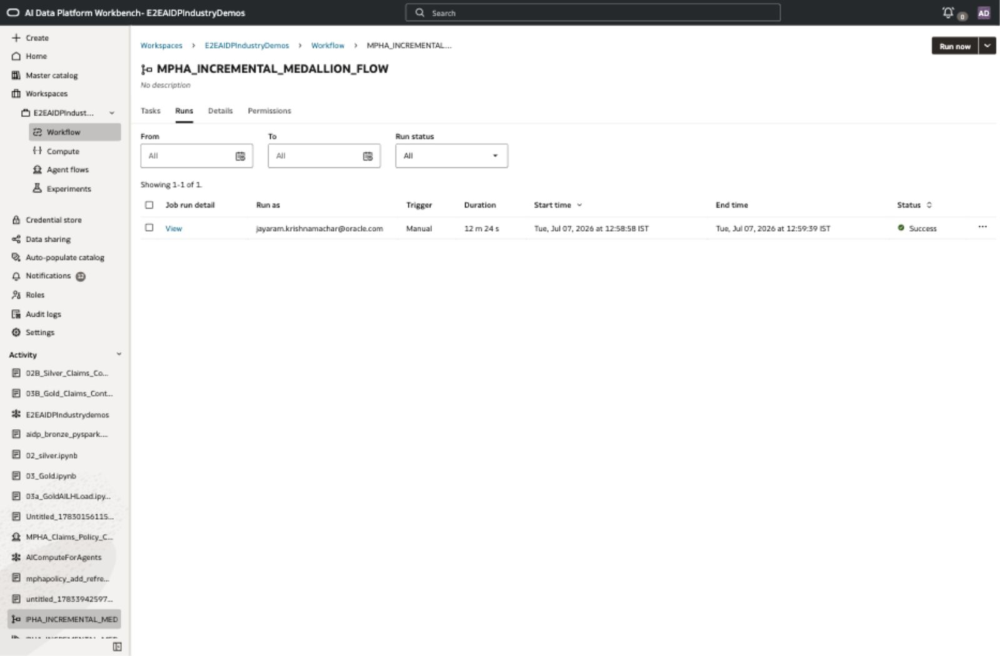
Confirm task progress and final success
Open task details as the workflow runs. The Bronze output proves the raw files were written to the shared volume. The final lakehouseload task confirms the Claims star schema load.
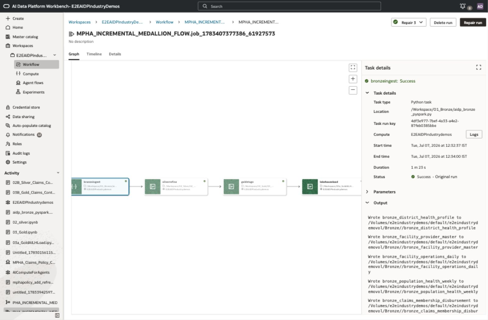
After running the workflow, open the final task details and confirm the Lakehouse load completed successfully.
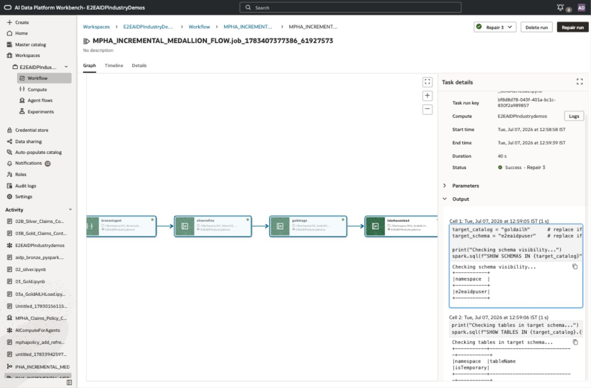
lakehouseload succeeded and the notebook verified the connected AI Lakehouse schema.| Validated point | Discussion point | Workshop asset |
|---|---|---|
| Timeout | Set a timeout on every task before adding the next dependent task. The validated screenshots use 30 minutes; increase it if your compute startup is slower. | See the workflow screenshot pack. |
| Task type | Match the task type to the uploaded asset. The validated Bronze task used a Python file; the other tasks used notebooks. | Bronze, Silver, Gold, and AI Lakehouse load assets. |
| Incremental load | The AI Lakehouse connector does not support destructive reset operations from the notebook, so the load notebook reads existing target keys and inserts only new rows. | AI Lakehouse load notebook. |
| Repair run | If only the downstream AI Lakehouse task fails, use Repair run and select only lakehouseload after fixing the notebook. | AIDP incremental medallion workflow runbook. |
lakehouseload task completed successfully and the target AI Lakehouse schema was visible to the notebook.Lab 2
Publish the Claims star schema into Autonomous AI Lakehouse
The guided dashboard uses a Claims star schema, not a flat Gold export. Participants run the direct-load notebook to write dimensions and the monthly claims fact into the connected AI Lakehouse external catalog.
Step 1: Confirm the Claims target schema
Participant stepAdmin creates the Claims target tables in AI Lakehouse during Lab 0. Participants confirm they can read the target schema through the AIDP external catalog before running the load notebook.
Step 2: Run the Claims star schema load notebook
Participant step- Upload
04_Claims_Star_AI_Lakehouse_Load.ipynbor the matching PySpark notebook into03a_GoldAILHLoad. - Attach the shared Spark compute.
- Confirm
target_catalogandtarget_schema. - Run all cells to write dimensions and
mpha_fact_claims_monthlyinto AI Lakehouse.
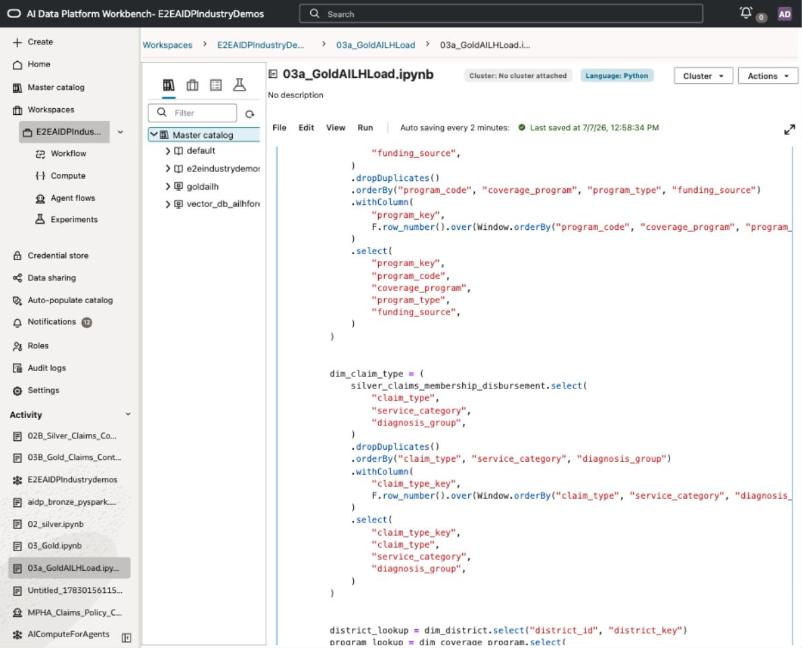
Step 3: Validate the loaded Claims star schema
Participant step- Open Database Actions or the approved SQL execution surface.
- Run
sql/claims_star_validation.sql. - Confirm all five Claims star schema tables return non-zero row counts.
- Confirm the orphan-row check returns
0.
Step 4: Hand off the validated star schema to OAC
Participant stepOnly after validation succeeds should OAC connect to the Claims star schema. This avoids building dashboards on partial or failed loads.
Lab 3
Create the OAC self-service model and Executive Overview dashboard
OAC connects to the validated Claims star schema. The dataset is prepared as a self-service model, indexed for Assistant, and then used to build the MPHA Claims Processing Command Center.
Step 1: Create or confirm the OAC connection to AI Lakehouse
Participant stepIn OAC, create or confirm the Autonomous AI Lakehouse connection that points to the validated Claims star schema from Lab 2.
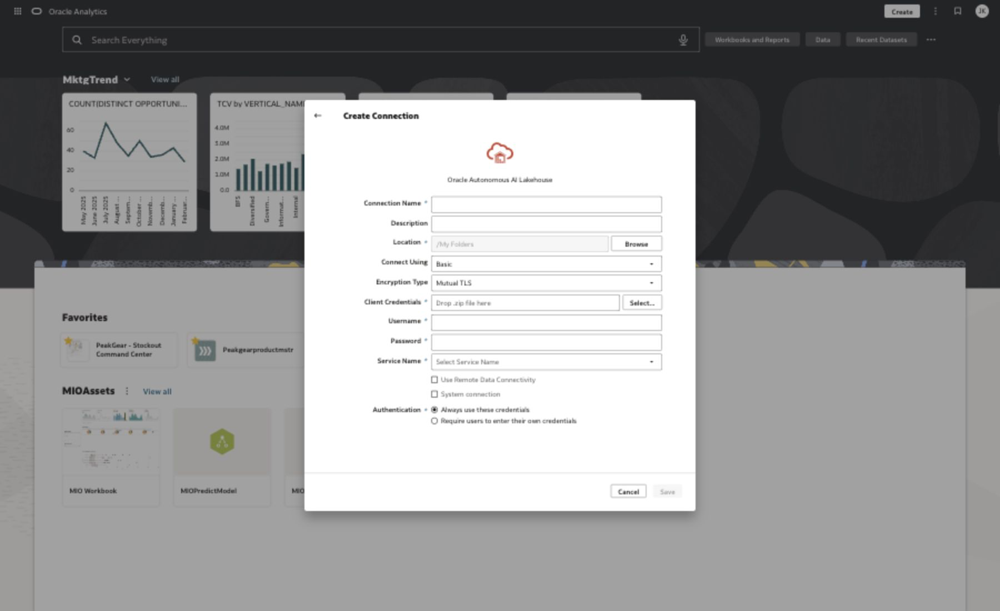
Step 2: Create the MPHAClaimAnalysis dataset
Participant step- Create a dataset from the AI Lakehouse connection.
- Expand the connected schema.
- Select
mpha_fact_claims_monthlyand the four Claims dimensions.
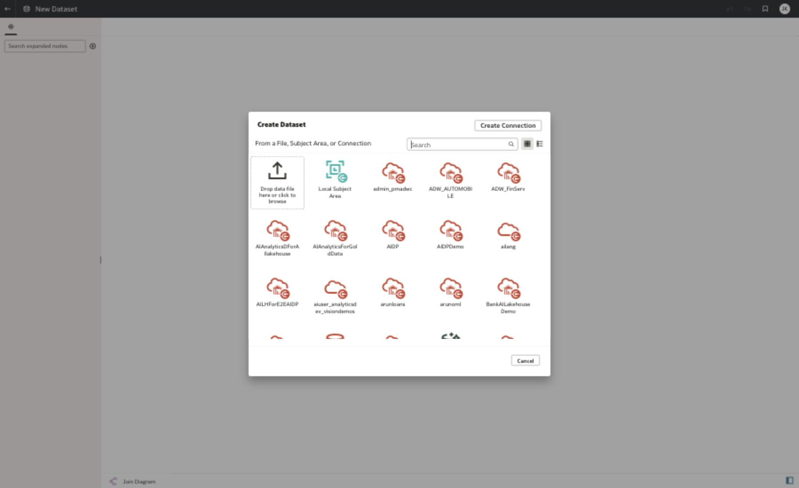
In the dataset editor, expand the AI Lakehouse connection schema and confirm the Claims star schema tables are available for modeling.
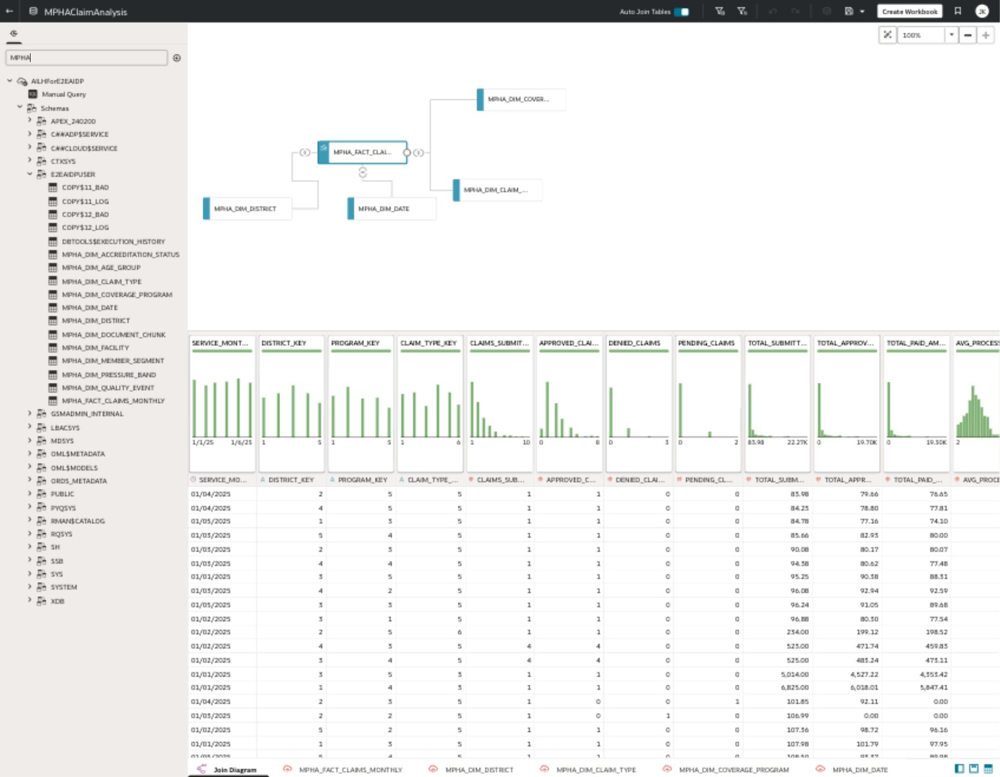
Step 3: Prepare the self-service model and inspect the data profile
Participant step- Drag the tables into the Join Diagram.
- Confirm the Claims fact joins cleanly to Date, District, Coverage Program, and Claim Type.
- Use the data profiling panel to validate distributions, nulls, and sample rows.
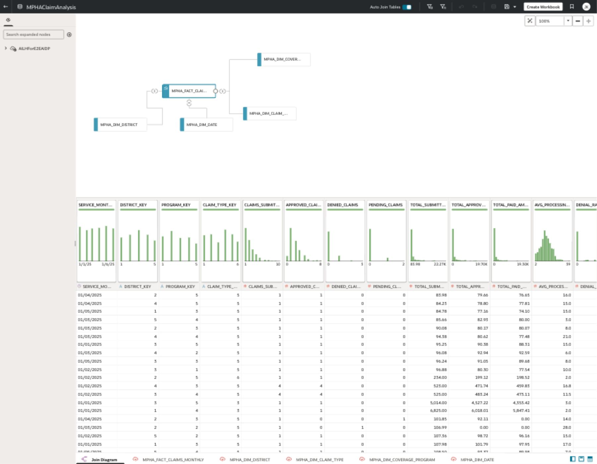
Step 4: Index the dataset for OAC Assistant
Participant step- Open dataset inspection settings.
- Enable indexing for
Assistants and Homepage Search. - Review the indexed field scope, save, and run indexing if needed.
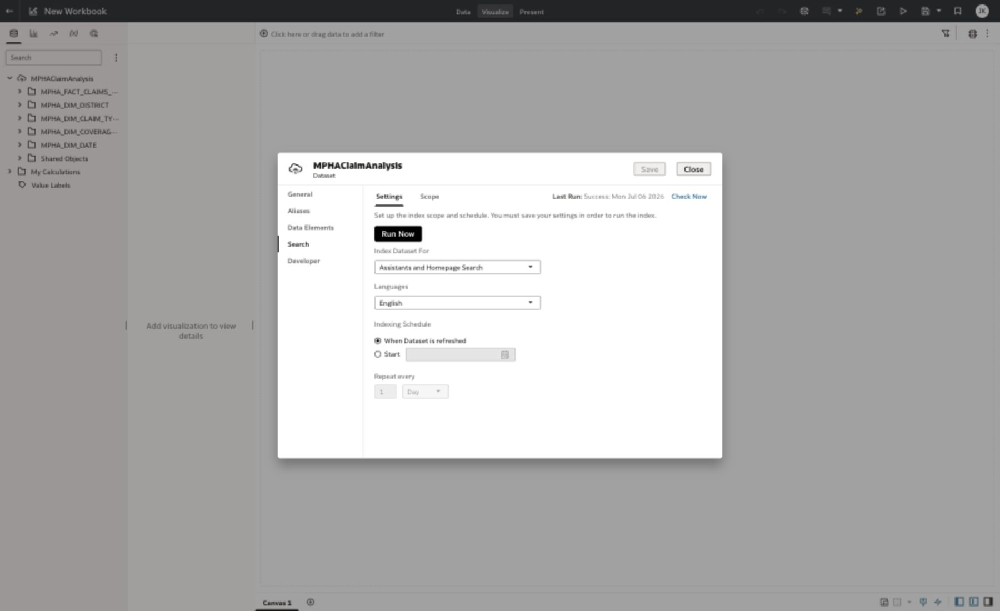
Step 5: Build or open the Executive Overview canvas
Participant stepBuild the Executive Overview canvas with filters, KPI tiles, denial hotspot heatmap, district donut, claim-type review table, bubble analysis, denial-rate trend, and business-question chart titles.
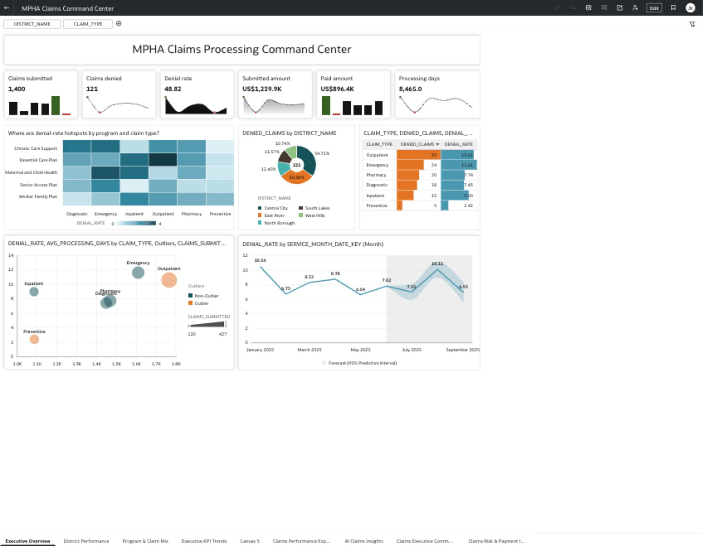
Step 6: Test OAC Assistant on the indexed Claims dataset
Participant stepAsk claims-focused questions only. Playbook or policy questions belong in Optional Lab 6B because they require the RAG knowledge base.
| Assistant prompt | Expected response pattern |
|---|---|
| Which districts contribute the most denied claims? | Ranks districts using denied-claim volume and points users to the donut and claim-type review table. |
| Which claim types need denial review? | Highlights Outpatient and Emergency as high-priority review areas when they combine denial volume with processing pressure. |
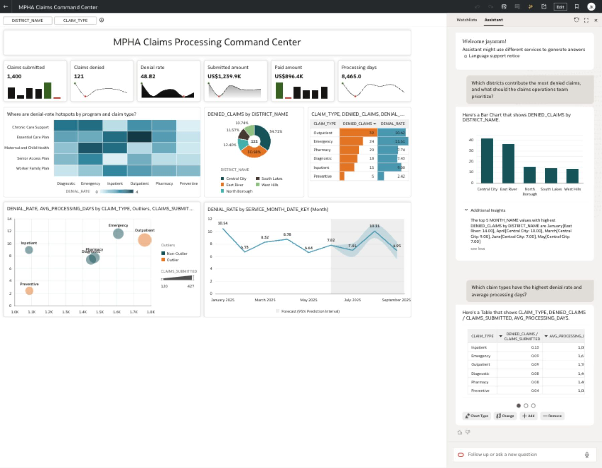
Lab 4
Extend Claims analytics with JSON and spatial context
Round 1 answered the original Claims visibility requirement. In Round 2, MPHA leadership asks whether Claims denial hotspots are connected to facility capacity pressure and spatial access gaps. The extension pattern keeps the original Claims star schema stable, adds new JSON and spatial enrichments through AIDP, and publishes district-level context beside the existing Gold model in AI Lakehouse.
Step 1: Upload and run the Round 2 Silver extension notebook
Guided extension- Download
02B_Silver_Claims_Context_Extension.ipynbfrom the workshop assets. - Open the existing AIDP workspace and go to the
O2_Silverfolder. - Upload the notebook. This is an add-on notebook; it does not replace
02_silver.ipynb. - Attach the same Spark compute used in Lab 1 and run all cells.
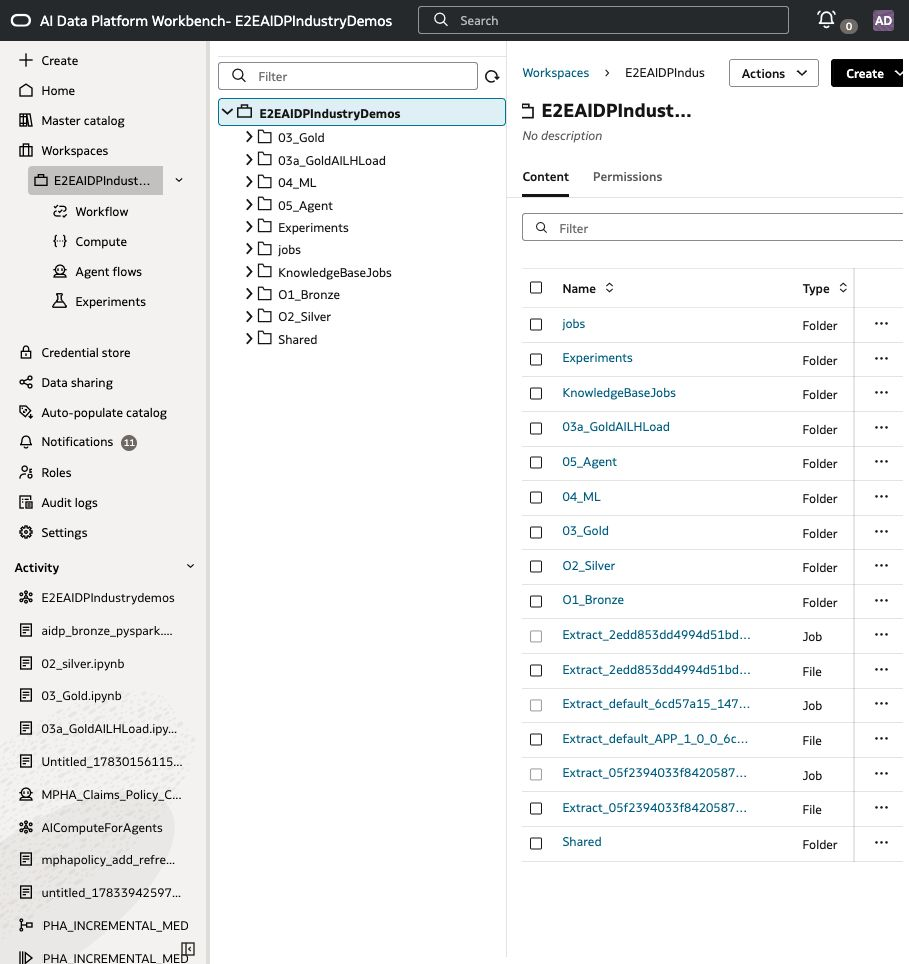
Upload the Round 2 Silver extension notebook into the O2_Silver folder without replacing the original Silver notebook.
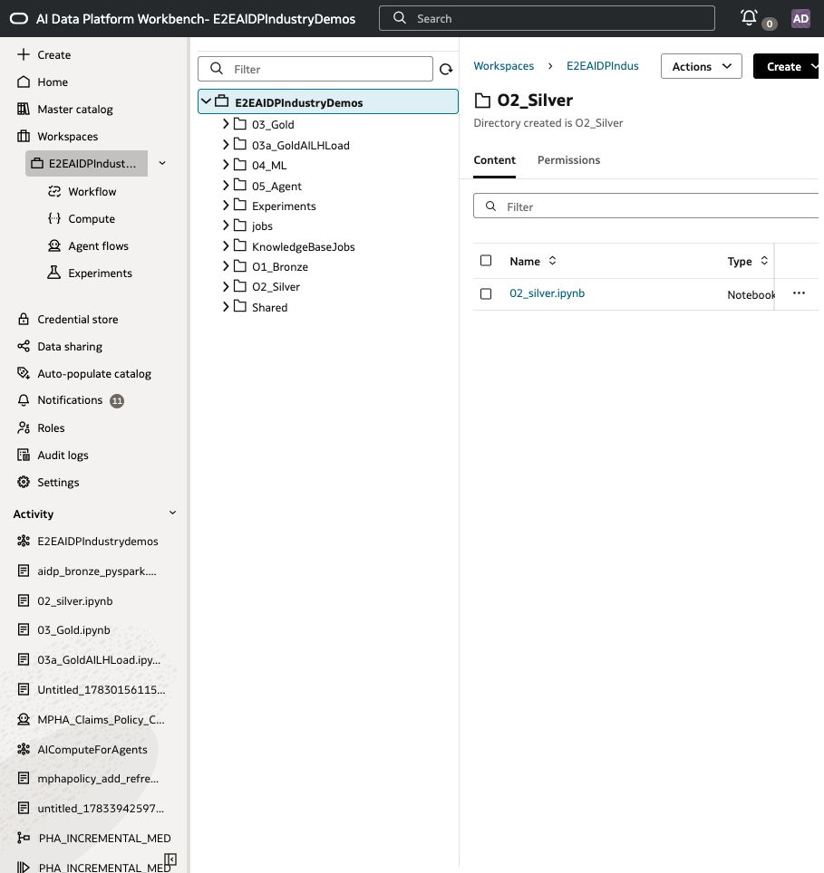
02B_Silver_Claims_Context_Extension.ipynb in O2_Silver as a new add-on notebook.Open the uploaded Silver extension notebook and attach the active Spark cluster before running it.
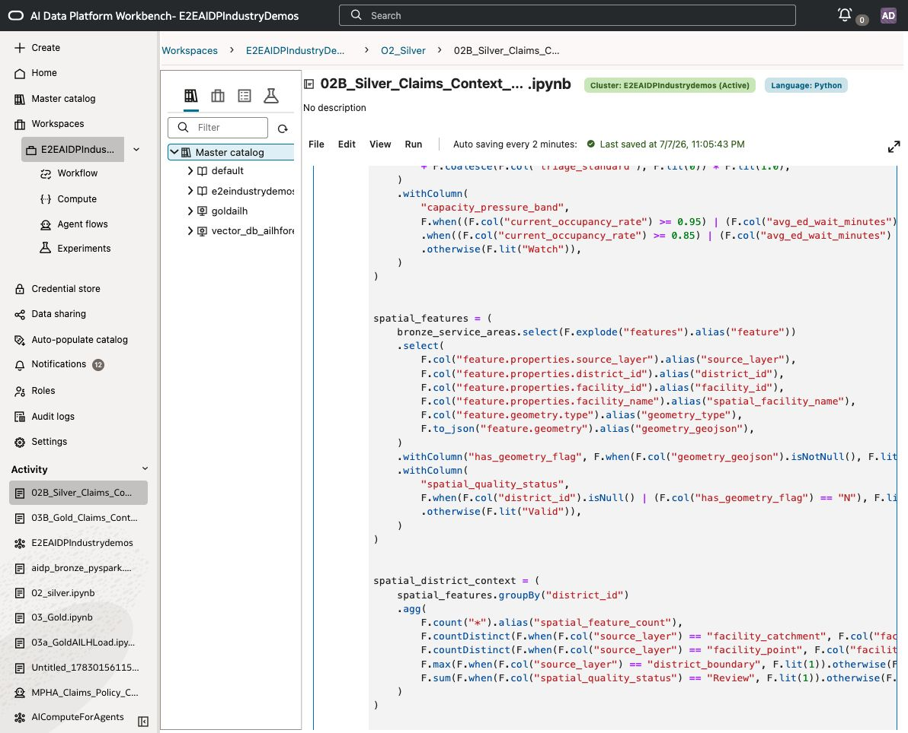
02B_Silver_Claims_Context_Extension.ipynb, attach the active Spark cluster, and keep the original 02_silver.ipynb untouched.Run the Silver extension notebook and confirm it creates the district access context output.
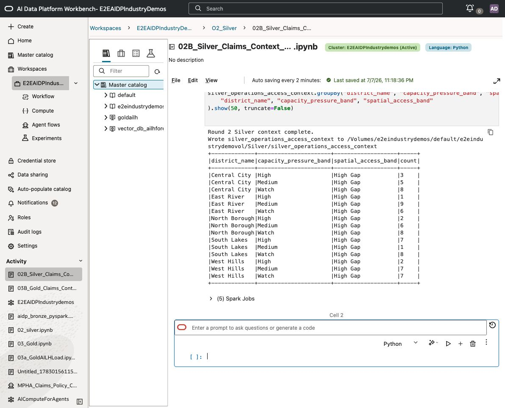
silver_operations_access_context and prints district-level capacity and spatial access bands.| Bronze input | Silver enrichment | Business meaning |
|---|---|---|
bronze_facility_capacity_events | Parse JSON timestamps, flatten triage counts, derive supply/diversion flags, and classify capacity_pressure_band. | Turns operational JSON events into comparable district/facility pressure signals. |
bronze_healthcare_service_areas_geojson | Explode GeoJSON features, classify boundaries, facility points, and catchments, then derive access coverage signals. | Turns spatial service-area data into district access context. |
| Facility and district reference data | Join JSON and spatial signals to facility and district master data. | Creates one conformed table: silver_operations_access_context. |
Step 2: Create the AI Lakehouse extension table
Admin step- Open Autonomous AI Lakehouse Database Actions or the approved SQL execution surface.
- Run
sql/create_ai_lakehouse_claims_context_extension.sql. - Confirm
mpha_fact_district_claims_contextandmpha_claims_district_context_vare created in the same schema as the Claims star schema.
mpha_fact_claims_monthly or any Claims dimension.
goldailh.e2eaidpuser external catalog, then the Gold notebook inserted 5 district-month context rows. Database Actions remains the recommended delivery path for the SQL script.
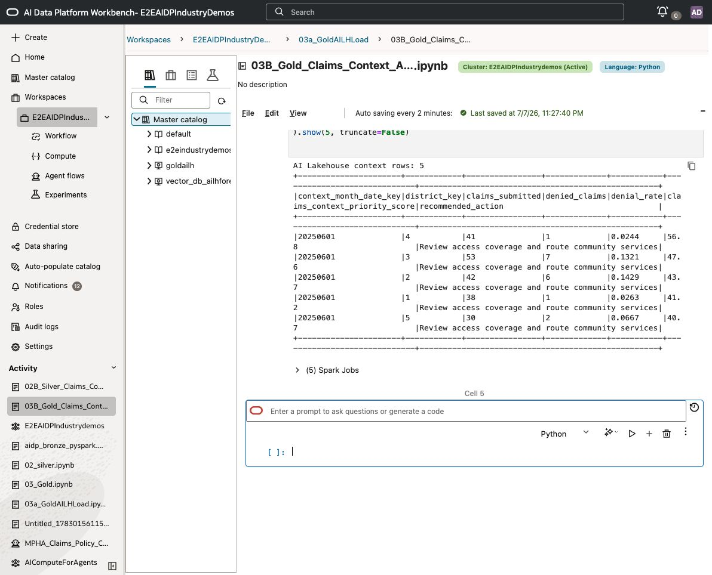
mpha_fact_district_claims_context from AI Lakehouse.Step 3: Upload and run the Gold plus AI Lakehouse extension notebook
Guided extension- Download
03B_Gold_Claims_Context_AI_Lakehouse_Extension.ipynbfrom the workshop assets. - Open the existing
03a_GoldAILHLoadfolder in AIDP. - Upload the notebook. Confirm
target_catalog,target_schema, andtable_prefix. - Run all cells. The notebook writes
gold_district_claims_contextand inserts new rows intompha_fact_district_claims_context.
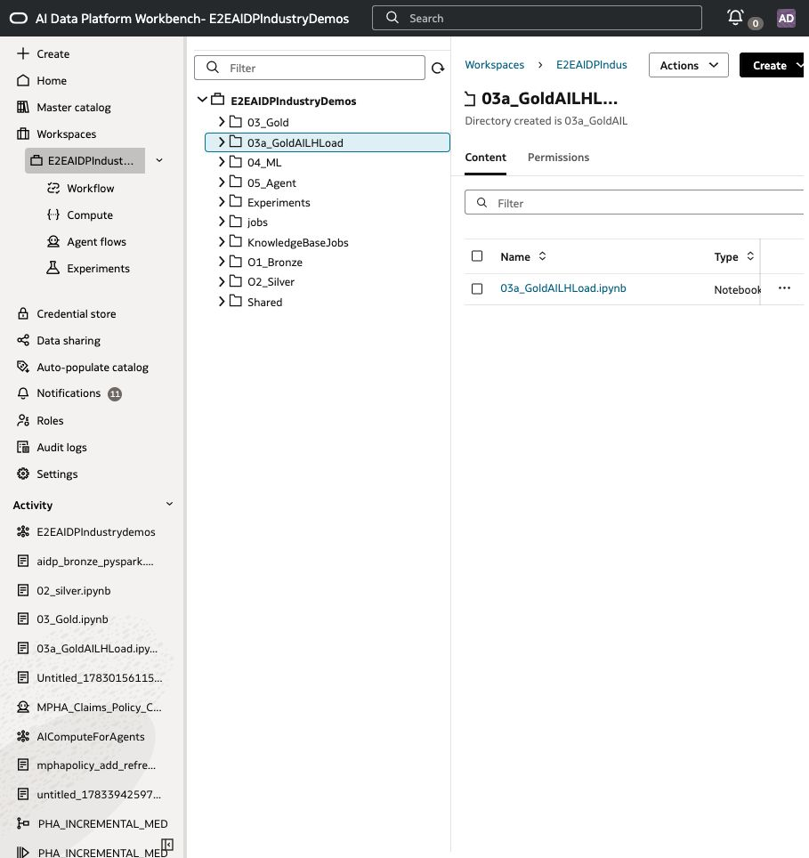
Open the Gold extension notebook and attach the same active Spark cluster used for the prior extension.
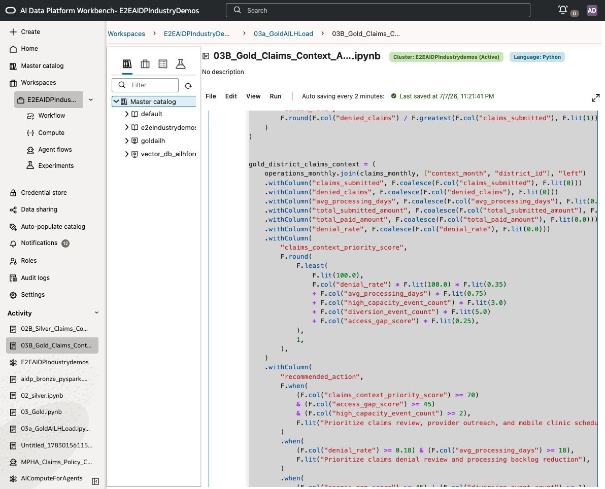
03B_Gold_Claims_Context_AI_Lakehouse_Extension.ipynb to the same active Spark cluster before execution.Run the Gold extension notebook and confirm the district context fact table is loaded into AI Lakehouse.
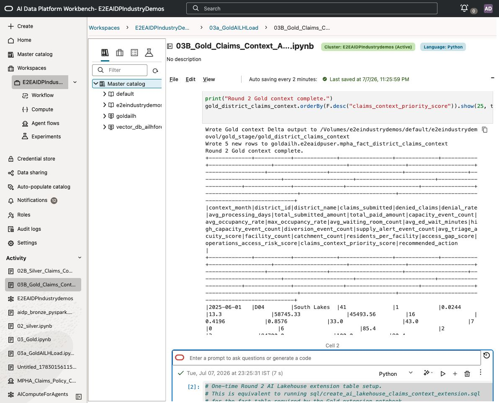
gold_district_claims_context and inserts new rows into goldailh.e2eaidpuser.mpha_fact_district_claims_context.| Gold output | Grain | Key measures |
|---|---|---|
gold_district_claims_context | District-month | Claims submitted, denied claims, denial rate, processing days, occupancy, wait pressure, diversion count, supply alerts, residents per facility, access gap score, and priority score. |
mpha_fact_district_claims_context | District-month in AI Lakehouse | Same context metrics keyed to mpha_dim_date and mpha_dim_district. |
mpha_claims_district_context_v | OAC-ready view | District-level context for adding extension visuals to the existing Claims dashboard. |
Step 4: Validate and extend OAC
Guided extension- Run
sql/claims_context_extension_validation.sql. - In OAC, open the existing MPHA Claims workbook and add
mpha_claims_district_context_vto the workbook data model or as an additional dataset. - Join the context view at district and month grain where the workbook model allows it, or keep it as a separate dataset for Assistant questions.
- Inspect the added context fields and enable indexing so OAC Assistant can use the new JSON capacity and spatial access signals.
- Do not create a new canvas for this workshop step. The objective is to demonstrate that the existing workbook can be extended with new Lakehouse data and tested through natural-language questions.
mpha_claims_district_context_v exists in the external catalog and returns 5 rows for dashboard extension.Which denial hotspots also have high capacity pressure?
Which districts combine high denial rate and poor spatial access?
Which districts have supply alerts or diversion events that may explain claims processing pressure?
Where are residents per facility highest, and how does that compare with denial rate?
Where should MPHA prioritize claims review, provider outreach, and mobile clinic intervention together?
Optional Lab 5
Track, train, register, and score a Claims denial risk model
This optional lab turns the Claims star schema into a predictive review-prioritization use case. Participants upload and run an AIDP ML notebook, review the tracked run in AIDP Experiments, register the selected model in the catalog, and publish batch scores that can be added to AI Lakehouse or OAC as a follow-on analytics extension.
Business use case
MPHA wants to predict which district, coverage program, and claim-type combinations are most likely to show high denial risk in the next review cycle. Claims operations can then prioritize documentation checks, provider follow-up, policy remediation, and payment leakage review before the backlog grows.
| ML lifecycle stage | AIDP capability | Workshop action |
|---|---|---|
| Prepare features | Spark notebook | Read Gold claims, capacity, accreditation, and spatial features. |
| Track training | Experiments with MLflow | Create MPHA Claims Denial Risk Prediction and log model parameters and metrics. |
| Compare runs | Experiment run list and compare view | Compare AUC, high-risk count, average score, and feature set notes. |
| Govern model | Models registry | Register the selected run as claim_denial_risk. |
| Operationalize | Batch scoring notebook or workflow | Score the latest month and publish gold_claims_denial_risk_scores to Gold-stage storage; optionally load or add it to AI Lakehouse/OAC for consumption. |
Official AIDP references used
- AIDP Experiments: experiment tracking, MLflow autologging, run comparison, reproducibility, retraining, and registering a model from a run.
- AIDP Models: model registry, versions, metrics, artifacts, lineage, and batch inference usage.
- Customer-managed MLflow servers: optional external tracking server pattern and its tradeoff with built-in AIDP Experiments and Models integration.
Step 1: Confirm ML prerequisites and upload the notebook
- Admin step: confirm compute compatibility. Oracle documents that Experiments and Models require Intel- or AMD-based compute and are not currently supported on ARM-based compute clusters.
- Admin step: confirm the ML folder. Confirm that
04_MLexists in the AIDP workspace and the shared Spark cluster can be attached to notebooks. - Admin step: confirm Gold inputs. Lab 1 and Lab 2 must be complete so the Gold feature sources and Claims star schema are available.
- Participant step: upload the notebook. Download
notebooks/aidp_ml_claims_denial_risk_pyspark.py, upload it into04_ML, and open the file. - Participant step: attach compute. Attach the workshop Spark cluster before running the notebook.
- Participant step: confirm notebook parameters. The validated notebook uses
gold_stage_base = "/Volumes/e2eindustrydemos/default/e2eindustrydemovol/gold_stage",experiment_name = "MPHA Claims Denial Risk Prediction",mlflow_run_name = "claims_denial_risk_v1_baseline", andmodel_artifact_path = "claims_denial_risk_pipeline".
04_ML alongside the Bronze, Silver, Gold, AI Lakehouse load, and Agent folders.Upload the ML notebook into the 04_ML folder so it is separated from the core medallion notebooks.
04_ML. In the delivered workshop kit, use the file named aidp_ml_claims_denial_risk_pyspark.py.Open the ML notebook, attach compute, and check the Gold-stage input path before running the cells.
Step 2: Create or confirm the AIDP Experiment
- Admin step: create the experiment if it does not already exist. Open Experiments from AIDP Workbench and click Create.
- Name the experiment
MPHA Claims Denial Risk Prediction. - Add the description
Tracks MPHA claims denial risk model training, validation metrics, and candidate model registration for the workshop ML lab. - Optionally add tags such as
domain=public_healthcare,model_type=classification, andgrain=district_program_claim_type_month. - Participant step: verify the experiment. After the notebook runs, return to Experiments and confirm the experiment is visible.
MPHA Claims Denial Risk Prediction experiment is visible in the Experiments page.Step 3: Run training and review the experiment run
- Participant step: run all notebook cells. The notebook builds the training frame at Claims star schema grain: service month, district, coverage program, and claim type.
- Confirm the run name is
claims_denial_risk_v1_baselineand the status isFINISHED. - Confirm the latest validated run shows a scoring row count of
102. - Confirm the run metrics are visible:
avg_denial_risk_score,high_risk_slice_count,medium_risk_slice_count,model_auc_training, andscored_row_count. - Use the metrics as a teaching moment: the model should create a usable claims review queue, not only a high statistical score.
import mlflow
experiment_name = "MPHA Claims Denial Risk Prediction"
mlflow.set_experiment(experiment_name)
mlflow.autolog()
with mlflow.start_run(run_name="claims_denial_risk_v1_baseline"):
# Train model, log parameters, log metrics, and publish scoring output.model_auc_training is 0.9798100365704998, avg_denial_risk_score is 0.1605, and scored_row_count is 102.Step 4: Open the run and confirm the logged model artifact
- Participant step: open the latest finished run. Click the newest
claims_denial_risk_v1_baselinerun. - Confirm the run information shows status
FINISHED, start time, end time, and duration. - In the Models section, confirm the logged model artifact is
claims_denial_risk_pipeline. - If the model has already been registered in the shared environment, confirm the Registered models section shows
e2eindustrydemos.default.claim_denial_riskwith versionv1. - If this is a participant-run environment, continue to Task 5 to register the model.
| Run metric | How the facilitator explains it |
|---|---|
model_auc_training | Indicates how well the baseline separates high-denial and lower-risk slices in the historical training frame. |
high_risk_slice_count | Shows how much manual-review workload the model is creating for operations teams. |
avg_denial_risk_score | Helps compare whether a run is over-scoring or under-scoring the portfolio. |
feature_count | Confirms which engineered signal set was used for that run. |
Step 5: Register the selected model
- Guided step: From the run details page, click Register.
- Enter or select the model name
claim_denial_risk. - Choose the model location
Master catalog - e2eindustrydemos - default. - Use the logged model artifact
claims_denial_risk_pipeline. - Use version
v1. AIDP shows this in the disabled version field for the first version. - Add optional metadata such as
business_owner=claims_operations,review_use_case=denial_prioritization, andserving_pattern=batch_score. - Click Register.
claim_denial_risk under the e2eindustrydemos.default catalog location.claim_denial_risk, version v1, with lineage back to the experiment run that produced it.
Step 6: Verify the registered model in Master Catalog
- Participant step: open Master Catalog. Navigate to Master catalog - e2eindustrydemos - default - Models.
- Confirm
claim_denial_riskappears in the Models list. - Open
claim_denial_risk. - Confirm Latest version number is
1and the version button showsv1. - If the run detail page does not immediately show the linked registered model, use this catalog path as the authoritative verification step.
e2eindustrydemos.default.Models with latest version 1.Open the registered model details and verify version v1 is available for the denial risk model.
Version: v1.Step 7: Batch score and publish the risk output
- Participant step: run the scoring cells. The notebook scores the latest service month after training is complete.
- Publish
gold_claims_denial_risk_scoresto Gold-stage storage for downstream analytics. - Publish
gold_claims_denial_model_run_summaryso users can trace which model run produced the output. - Confirm each scored row keeps the Claims star schema grain: service month, district, coverage program, and claim type.
- Optional consumption path: load the scored output into AI Lakehouse or add it to the OAC workbook as an additional dataset, then index it for Assistant questions about denial risk.
| Scoring output | Workshop use |
|---|---|
denial_risk_score | Sorts district-program-claim-type slices by likely review need. |
likely_denial_bucket | Provides a business-friendly High, Medium, or Watch classification. |
review_priority | Creates an action queue for claims operations. |
model_version | Links the score back to the registered model version. |
score_run_date | Shows when the batch scoring output was produced. |
| ML input | Why it matters |
|---|---|
gold_claims_summary | Core claims volume, denial, payment, and processing-time signals. |
gold_capacity_event_latest | Operational pressure that can explain delayed adjudication or service strain. |
gold_provider_accreditation_summary | Provider quality and accreditation risk context. |
gold_spatial_access_insights | District pressure, access coverage, and travel context for public-health equity. |
Optional Lab 6A
Prepare the MPHA RAG knowledge base in AIDP
This lab prepares the document grounding layer for the Claims and Policy Copilot. Participants verify that the MPHA playbook is reachable through the AIDP external volume, create a knowledge base in the standard catalog schema, add the playbook folder as the data source, and validate that ingestion succeeds.
Business scenario
The agent should not answer policy questions from general model memory. It should retrieve evidence from the MPHA Winter Respiratory Response Playbook and use that evidence when recommending denial-remediation, accreditation, disbursement, membership, and facility-pressure actions.
Target objects
| Object | Workshop value | Purpose |
|---|---|---|
| Standard catalog | e2eindustrydemos | Stores the AIDP knowledge base metadata. |
| Schema | default | Contains volumes, models, and knowledge bases used in the workshop. |
| External volume | e2eindustrydemovol | Maps Object Storage folders into AIDP Workbench. |
| Document folder | /Volumes/e2eindustrydemos/default/e2eindustrydemovol/RawData | Contains the playbook document used for RAG ingestion. |
| Knowledge base | e2eindustrydemos.default.mphapolicy | Stores document chunks and vector embeddings for the RAG tool. |
Step 1: Open the standard catalog schema
- Participant step: In AIDP Workbench, click Master catalog.
- Open the standard catalog
e2eindustrydemos. - Open the schema
default. - Confirm the schema shows Volumes, Knowledge Bases, and Models.
e2eindustrydemos.default is the schema where the MPHA knowledge base will be created.Step 2: Confirm the playbook source in the external volume
- Participant step: Open Volumes and confirm
e2eindustrydemovolis listed as an External volume. - Open
e2eindustrydemovoland then openRawData. - Confirm the folder contains
MPHA_Winter_Respiratory_Response_Playbook.docx. - Use the folder path, not an individual file, when adding the knowledge-base data source.
e2eindustrydemovol.Open the RawData folder and confirm the MPHA playbook document is available for the knowledge base.
MPHA_Winter_Respiratory_Response_Playbook.docx.Step 3: Create the knowledge base shell
- Participant step: Return to
e2eindustrydemos.default. - Click Add to schema and choose Knowledge base.
- Name the knowledge base
mphapolicy. - Use a description such as
MPHA playbook knowledge base for claims policy copilot. - Open Advanced settings and select the workshop workspace and ingestion cluster.
- Select the approved embedding model. The official AIDP options include
ALL_MINILM_L12_V2andMULTILINGUAL_E5_SMALL; use the model made available in the workshop environment. - Use default chunk settings unless the facilitator provides a different value. The product dialog defaults to 500 characters per chunk and 100 characters overlap.
Complete the Create Knowledge Base dialog with workspace, cluster, embedding model, and chunking settings.
Step 4: Add the RawData folder as the knowledge-base data source
- Participant step: Open the
mphapolicyknowledge base. - On the Data Source tab, click Add data source to knowledge base.
- In the tree selector, choose
e2eindustrydemos.default.e2eindustrydemovol.RawData. - Keep DOCX selected. It is acceptable to keep PDF and TEXT selected if the same folder may later include those supported formats.
- Leave Start ingestion job on add selected for the workshop run, then click Add.
Step 5: Validate source parameters and run ingestion if needed
- Participant step: After the data source is added, confirm the source row appears under Data Source.
- Open the
RawDatasource. - Confirm the path is
/Volumes/e2eindustrydemos/default/e2eindustrydemovol/RawData. - Confirm the file patterns include docx.
- If the ingestion did not start automatically, click Ingest now.
mphapolicy points to the RawData folder in the external volume.Open the knowledge base data source parameters and review the path, file pattern, workspace, cluster, and ingest control.
Step 6: Verify the ingestion job completed
- Participant step: Open the Job runs tab for the
RawDatasource. - Wait until the latest run shows Succeeded.
- Return to the knowledge base and open Details if you need to confirm the workspace and cluster keys used for the ingestion.
- Record the knowledge base path
e2eindustrydemos.default.mphapolicyfor the RAG tool in Lab 6B.
Open the knowledge base details and confirm the completed knowledge base is ready for the RAG tool.
mphapolicy is a knowledge base in e2eindustrydemos.default and is ready to be selected by the RAG tool.e2eindustrydemos.default.mphapolicy is active, the RawData source points to the external-volume folder, and the latest ingestion job shows Succeeded.
Product reference: Oracle AI Data Platform Knowledge Bases.
Optional Lab 6B
Build the Claims and Policy Copilot agent flow in AIDP
This lab builds the MPHA Claims and Policy Copilot in Oracle AI Data Platform. The copilot uses one supervisor agent, one SQL executor for the Claims star schema, and one RAG executor that consumes the mphapolicy knowledge base prepared in Lab 6A.
mphapolicy knowledge base from Lab 6A and then build and test the agent flow.
Business scenario
Claims leaders want a single copilot that can answer what is happening in claims operations and what the operating playbook recommends next. SQL answers come from the governed Claims star schema. Policy guidance comes from the MPHA Winter Respiratory Response Playbook.
| Question type | Executor path | Example |
|---|---|---|
| Claims metric | SUPERVISOR_AGENT_1 -> AGENT_1 -> SQL_1 | Which districts have the highest denial rate? |
| Policy or playbook | SUPERVISOR_AGENT_1 -> AGENT_2 -> RAG_1 | What does the playbook recommend for high occupancy? |
| Combined action | SUPERVISOR_AGENT_1 -> AGENT_1 -> AGENT_2 -> synthesis | Where are the denial hotspots and what playbook action should operations take? |
Prerequisites
- Admin step: Validate the Claims star schema. Confirm
mpha_fact_claims_monthly,mpha_dim_date,mpha_dim_district,mpha_dim_coverage_program, andmpha_dim_claim_typeare populated in AI Lakehouse. - Admin step: Confirm the external catalog. Confirm AIDP can read the AI Lakehouse catalog and schema, for example
goldailh.e2eaidpuser. - Participant step: Confirm the playbook knowledge base from Lab 6A. The MPHA playbook must be indexed as
e2eindustrydemos.default.mphapolicyor the equivalent workshop knowledge base. - Admin step: Confirm the prepared shell and AI compute. Lab 0 should leave an empty
MPHA_Claims_Policy_Copilotshell and an active or startingAIComputeForAgentscompute. The shell should not contain supervisor, SQL, or RAG logic yet. - Participant step: Open AIDP Workbench. Use the shared workspace
E2EAIDPIndustryDemosand open Agent flows.
Step 1: Open the prepared blank copilot shell
- Open Agent flows from the AIDP workspace navigation.
- Open the prepared
MPHA_Claims_Policy_Copilotshell. If the facilitator did not run Lab 0, create a new visual-builder flow with that name. - Confirm the canvas is empty and ready for participant build-out.
- Confirm AI compute is active or can be attached before Playground testing.
Step 2: Configure the supervisor agent
- Select the supervisor node and name it
SUPERVISOR_AGENT_1. - Select the approved generative model. In the validated workshop run, the model is
google.gemini-2.5-flash. - Connect the chat trigger to the supervisor.
- Connect the supervisor to both executor agents:
AGENT_1for SQL andAGENT_2for RAG. - Add routing instructions that force the supervisor to call executor agents instead of answering directly.
Available executor agents:
- AGENT_1: structured MPHA claims analytics from the AI Lakehouse Claims star schema.
- AGENT_2: document-grounded MPHA policy, playbook, accreditation, prior authorization, denial remediation, disbursement, membership, and facility-pressure guidance.
- For structured claims questions, call AGENT_1.
- For document or policy questions, call AGENT_2.
- For combined data-plus-policy questions, call AGENT_1 first, then AGENT_2, then synthesize both results.
- Do not call SQL_1 or RAG_1 directly from the supervisor.Step 3: Configure the Claims SQL executor
- Add an Agent node and name it
AGENT_1. - Describe it as the Claims SQL executor for denial-rate, payment, district, program, claim type, and processing-day metrics.
- Use the same approved model as the supervisor.
- Connect
AGENT_1toSQL_1. - Add mandatory behavior that forces
AGENT_1to callSQL_1before answering any structured claims question.
AGENT_1 is scoped to claims metrics and must use only rows returned by SQL_1.Step 4: Configure the Claims star schema SQL tool
- Add a SQL tool and name it
SQL_1. - Use table or SQL-query mode depending on the AIDP environment available to the workshop team.
- Point the tool to the Claims star schema in AI Lakehouse.
- Expose only the fields required for the workshop: service month, district, coverage program, claim type, claims submitted, denied claims, denial rate, submitted amount, paid amount, and average processing days.
- Create an input such as
TOP_Nso the executor can return the requested number of hotspots.
SELECT
d.full_date AS service_month,
di.district_name,
p.coverage_program,
c.claim_type,
SUM(f.claims_submitted) AS claims_submitted,
SUM(f.denied_claims) AS denied_claims,
ROUND((SUM(f.denied_claims) * 100.0) /
CASE WHEN SUM(f.claims_submitted) = 0 THEN NULL ELSE SUM(f.claims_submitted) END, 2) AS denial_rate_pct,
ROUND(SUM(f.total_submitted_amount), 2) AS total_submitted_amount,
ROUND(SUM(f.total_paid_amount), 2) AS total_paid_amount,
ROUND(AVG(f.avg_processing_days), 1) AS avg_processing_days
FROM mpha_fact_claims_monthly f
JOIN mpha_dim_date d ON f.service_month_date_key = d.date_key
JOIN mpha_dim_district di ON f.district_key = di.district_key
JOIN mpha_dim_coverage_program p ON f.program_key = p.program_key
JOIN mpha_dim_claim_type c ON f.claim_type_key = c.claim_type_key
GROUP BY d.full_date, di.district_name, p.coverage_program, c.claim_type
ORDER BY denial_rate_pct DESC, denied_claims DESC
FETCH FIRST :TOP_N ROWS ONLYSQL_1 retrieves denial hotspots from the AI Lakehouse Claims star schema and returns a compact business-ready result set.Step 5: Configure the Policy RAG executor
- Add a second Agent node and name it
AGENT_2. - Describe it as the Policy RAG executor for playbook, accreditation, prior authorization, denial remediation, disbursement, membership, and facility-pressure guidance.
- Use the same approved model as the supervisor.
- Connect
AGENT_2toRAG_1. - Add instructions that force
AGENT_2to callRAG_1and cite retrieved evidence.
AGENT_2 answers only with evidence retrieved from the policy knowledge base.Step 6: Configure the MPHA playbook RAG tool
- Add a RAG tool and name it
RAG_1. - Select the knowledge base
e2eindustrydemos.default.mphapolicy, or the equivalent knowledge base created for this workshop. - Set the retrieval limit to return enough chunks for policy synthesis, while keeping responses concise.
- Use a natural-language input query so
AGENT_2can pass policy, playbook, and operational-pressure questions to the tool. - Instruct downstream answers to include source paths, chunk identifiers, or section references when available.
RAG_1 retrieves chunks from the MPHA playbook knowledge base and returns source-aware evidence.Step 7: Deploy the flow to AI compute
- Confirm the canvas contains the chat trigger, supervisor, SQL executor, RAG executor, SQL tool, and RAG tool.
- Click Compute on the agent flow page and attach the Lab 0 compute
AIComputeForAgentsif it is not already attached. - Open Playground only after the active AI compute badge appears.
- Deploy the flow.
- In the deployment dialog, select the AI compute that will host the deployed endpoint.
- Wait until the page shows Undeploy, which confirms the flow is deployed.
After deployment, confirm the agent flow is attached to AIComputeForAgents and the compute badge is active.
AIComputeForAgents (ACTIVE).Step 8: Open Playground and start a clean session
- Switch from Development to Playground.
- Select
SUPERVISOR_AGENT_1as the test target. - Create a new session for the participant run so earlier tests do not affect the conversation.
- Keep the test prompt focused on the workshop scope.
Step 9: Test SQL, RAG, and combined questions
Run these prompts in order. The first two isolate the executor branches. The third proves the supervisor can combine structured claims evidence with playbook evidence.
| Test | Prompt | Expected result |
|---|---|---|
| SQL-only | Identify the top 5 MPHA claims denial hotspots with district, coverage program, claim type, denied claims, denial rate, submitted amount, paid amount, and average processing days. | Uses AGENT_1 and SQL_1; returns claims hotspot rows. |
| RAG-only | What does the MPHA playbook recommend for rising respiratory emergency visits and high facility occupancy pressure? | Uses AGENT_2 and RAG_1; returns playbook actions and source chunks. |
| Combined | Use both agents. First identify the top 3 MPHA claims denial hotspots. Then retrieve general MPHA playbook actions for rising respiratory emergency visits and high facility occupancy pressure. Synthesize how operations should prioritize those high-denial districts if the same pressure conditions occur. | Calls SQL first, RAG second, and returns summary, claims evidence, playbook evidence, recommended action, and limitations. |
Expected combined result
| Returned evidence | Validated example from the workshop run |
|---|---|
| Claims hotspot 1 | East River, Maternal and Child Health, Pharmacy: 3 denied claims, 100% denial rate, $368.62 submitted, $0 paid, 21.7 average processing days. |
| Claims hotspot 2 | East River, Chronic Care Support, Emergency: 2 denied claims, 100% denial rate, $2,044.29 submitted, $0 paid, 15.5 average processing days. |
| Claims hotspot 3 | Central City, Chronic Care Support, Diagnostic: 2 denied claims, 100% denial rate, $868.39 submitted, $0 paid, 22.5 average processing days. |
| Policy evidence | Playbook chunks recommend discharge acceleration, transfer review, flex clinical staffing, routing non-urgent demand to same-day clinics, mobile sessions, extended respiratory assessment hours, and weekly executive review. |
| Operational recommendation | Prioritize East River and Central City during respiratory surge or occupancy pressure because they combine high denial exposure with operational access risk. |
Participant Challenge
Build the Facility Access Daily dashboard independently
After the guided Claims dashboard and optional extension labs, participants apply the same pattern to the Facility Access Daily star schema. This challenge checks whether participants can translate the Claims dashboard approach into a new public-healthcare operations use case.
| Design element | Participant expectation |
|---|---|
| Star schema | Use one fact table with conformed date, facility, district, and pressure-band dimensions. |
| KPIs | Use access, wait time, occupancy, staffing, and pressure metrics. |
| Diagnostic visuals | Use business-question titles and avoid raw column-name chart titles. |
| Presentation quality | Use equal spacing, round borders, light shadows, and a compact command-center layout. |
Workshop Assets
Everything needed for execution and validation
Keep this section near the end so participants first understand the business problem and flow, then download only what they need for execution.
Downloadable PDF execution guide for facilitators and participants.
One clean source package containing the five CSV files, one JSONL file, one GeoJSON file, and one MPHA playbook document.
Separate notebooks for Bronze, Silver, Gold staging, direct Claims star schema publishing, Round 2 context enrichment, ML scoring, and workflow execution.
Bronze
Silver
Claims direct load
Round 2 Silver context notebook
Round 2 Gold context notebook
ML scoring
Incremental workflow runbook
Separated SQL for Claims star schema, Facility Access structures, and focused validation checks.
Claims star schema SQL
Claims context extension SQL
Facilities star schema SQL
Claims validation SQL pack
Context extension validation SQL pack
Supporting design documents for the medallion flow, Claims star schema, and OAC workbook build.
Open medallion design and Claims star schema
Open dashboard spec
Closeout
What participants should be able to explain
- How raw CSV, JSON, spatial, and document data moves into Bronze.
- How Silver applies data quality, conformance, derived columns, and business-ready entities.
- Why the guided dashboard uses a Claims star schema in AI Lakehouse.
- How OAC uses a self-service data model, indexing, Assistant prompts, and dashboard best practices.
- How the same pattern can extend to facility operations, ML scoring, and policy copilot use cases.
Official References
The workshop content was prepared using these Oracle product references and tutorials.
- Oracle AI Data Platform quick-start journey blog
- Oracle AI Data Platform Experiments
- Oracle AI Data Platform Models
- Oracle AI Data Platform Knowledge Bases
- Oracle AI Data Platform AI Agents and Agent Flows
- Oracle AI Data Platform customer-managed MLflow servers
- Oracle Analytics tutorial: create a connection to Autonomous Data Warehouse / AI Lakehouse-style data
- Oracle Analytics tutorial: create a multi-table dataset
- Oracle Analytics tutorial: create canvases and visualizations
- Oracle Analytics tutorial: use Oracle Analytics Assistant
- Oracle Analytics tutorial: KPI tile with spark chart
- Autonomous Database documentation: provision Autonomous Database / AI Lakehouse foundation
- Autonomous Database documentation: connect to Database Actions
- Autonomous Database documentation: create users
- Autonomous Database documentation: manage user privileges